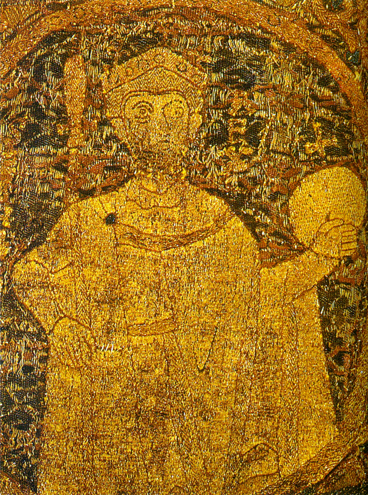
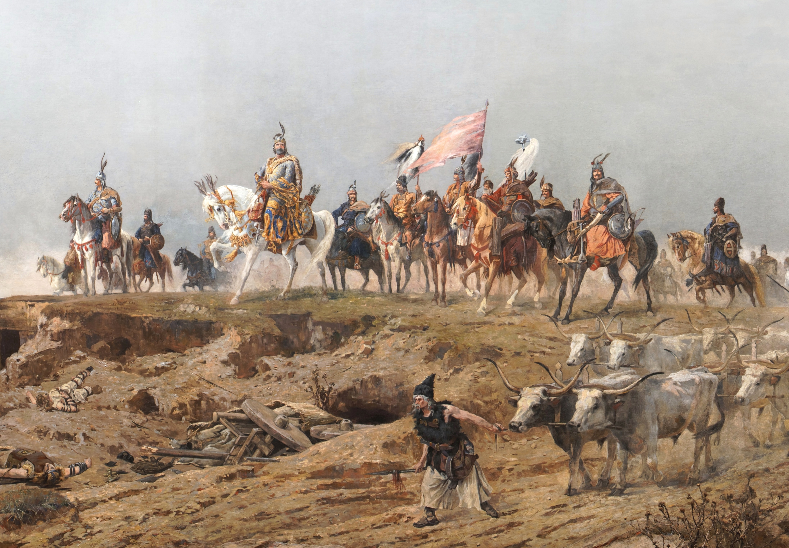

 A Magyar Királyság a Kárpát-medencében található. Ha nem tudná, ez a Német-római Birodalomtól keletre fekszik, a két birodalmat a Lajta folyó választja el egymástól. A Lengyel királyságtól délre, a Horvát királyságtól és a Bizánci Császárságtól pedig északra található. Királyságunk 36 éve létezik viszont népünk történelme régi időkre nyúlik vissza. Királyunk István, a királyság létrejötte óta uralkodik országunkban.
Sok a lehetőség, hiszen egy nagy ország vagyunk, sok féle néppel, sok féle területtel és kultúrával. Különböző lakhatási lehetőségek vannak, amik között mindenki megtalálja a magának valót. Az ország természeti adottságai kedvezőek mindenki számára. Európa legjobb területén helyezkedünk el, természetes védelemmel a hegyek miatt, sok forrással, legelővel. Ellentétben a környező országokkal, nekünk erős és nagy hadseregünk van, megannyi győzelemmel és tapasztalattal. Egy keresztény ország vagyunk így nem kell felhagyni vallásával, minden keresztény ünnepet megtartunk. Rendszeresek a vásárok, felvonulások, ünneplések. A sok féle kultúra sok féle ünnepet tart meg, különböző szokásokkal és tradíciókkal. Egy városban többféle kultúra is megfér egymás mellett így nem kell sokat vándorolnia, hogy megannyi szokást megismerhessen. Munka lehetőségből is megannyi van. Az ország teljes területén el tud helyezkedni akármi legyen foglalkozása.
Elege van abból, hogy országában nem keres eleget? Nem becsülik meg munkáját eléggé? Országának nincs jó viszonya a környező birodalmakkal? Nem elég erős hadsereggel rendelkeznek? Ne habozzon, költözzön a Magyar Királyságba. Itt mindent megkaphat amire vágyott. Erős hadsereg, sok munkalehetőség, sokféle kultúra.